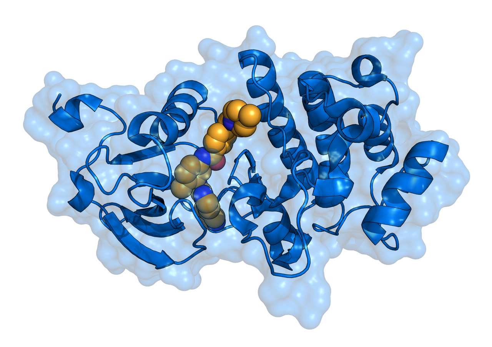
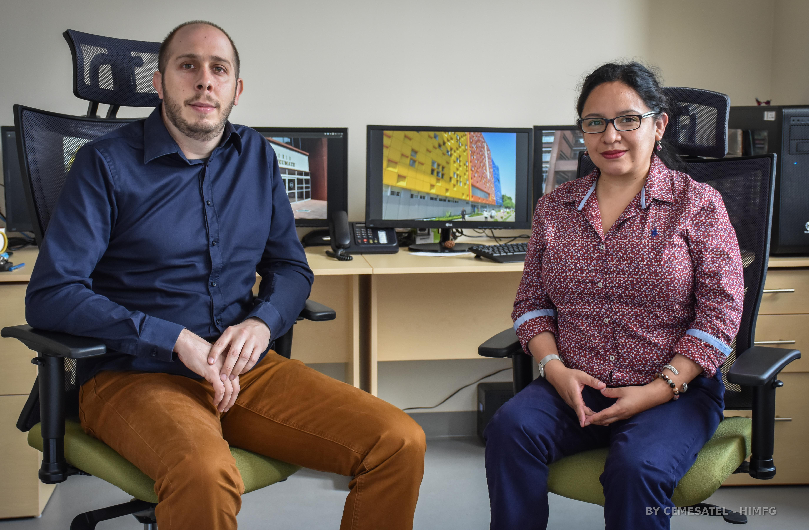
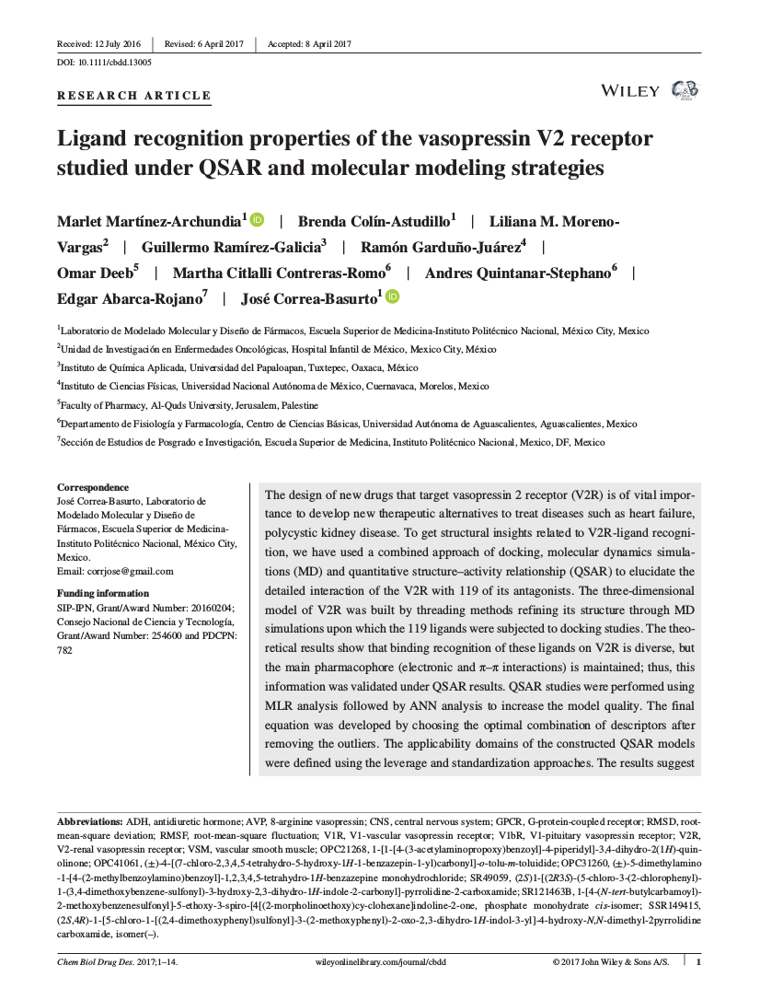
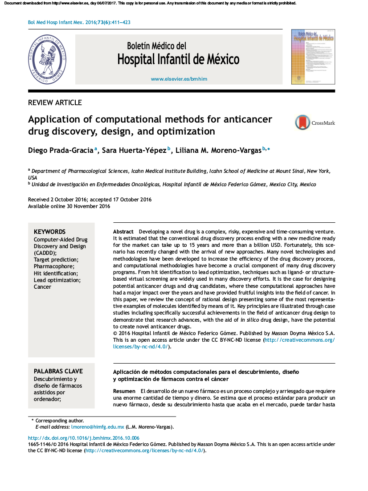
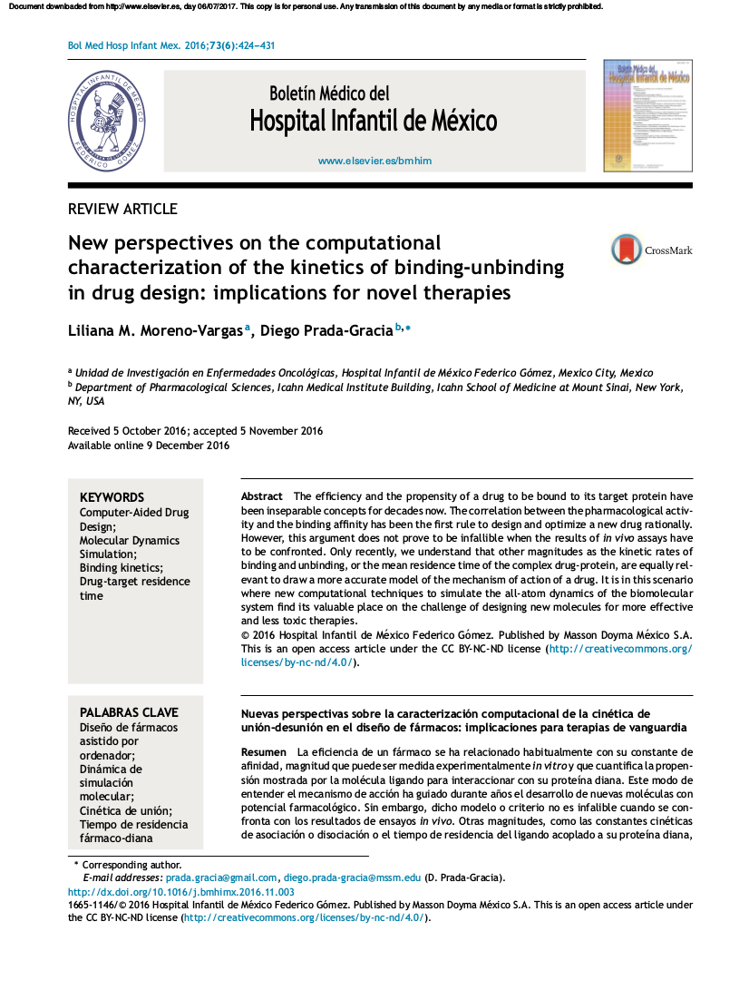

  Unidad de Investigación en Biología Computacional y Diseño de Fármacos Hospital Infantil de México Federico Gómez tweets by @uibcdf Actualmente estamos leyendo: Últimos artículos: "Ligand recognition properties of the vasopressin V2 receptor studied under QSAR and molecular modeling strategies." Marlet Martínez-Archundia, Brenda Colín-Astudillo, Liliana M. Moreno-Vargas, ..., José Correa-Basurto. Chem Biol Drug Des 2017;00:1–14. "Application of computational methods for anticancer drug discovery, design, and optimization." Diego Prada-Gracia, Sara Huerta-Yépez, Liliana M. Moreno-Vargas. Bol Med Hosp Infant Mex 2016;73:411-23 "New perspectives on the computational characterization of the kinetics of binding-unbinding in drug design: implications for novel therapies." Liliana M. Moreno-Vargas, Diego Prada-Gracia. Bol Med Hosp Infant Mex 2016;73:424-31 Gracias a: